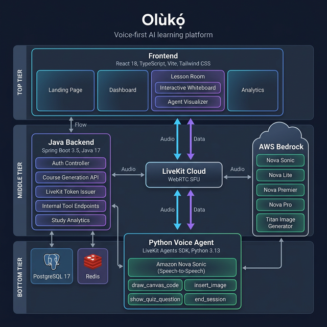
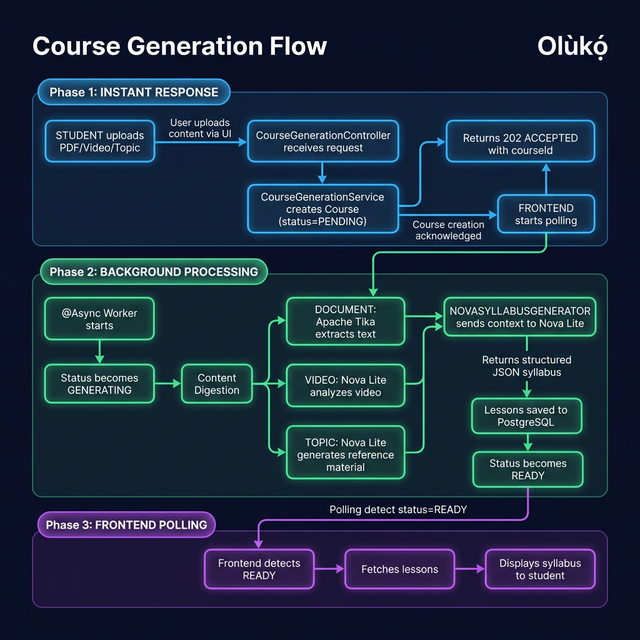
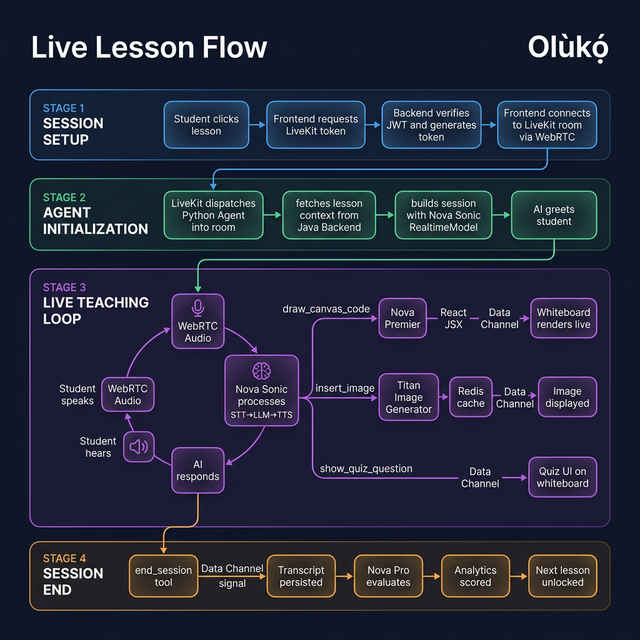
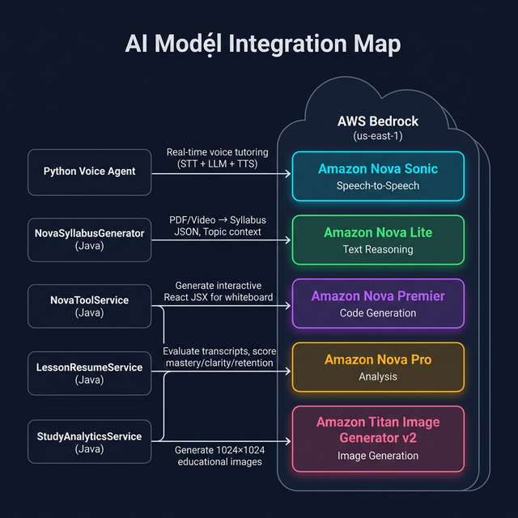
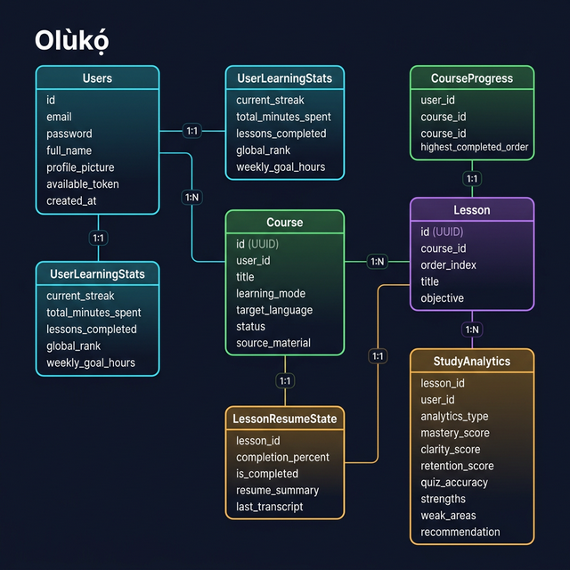

A voice-first AI learning platform that transforms any PDF, video, or topic into a live, interactive voice tutoring session with real-time whiteboard visualizations.
The inspiration for Olùkọ́ was born out of my own deep frustration with modern e-learning. Today's digital learning landscape often feels incredibly isolating. Staring at endless walls of AI-generated text is uninspiring, and slogging through dry PDFs literally puts me to sleep. Even worse are the long, pre-recorded video lectures—if you get stuck, you can't raise your hand to ask a question.
When I discovered the Amazon Nova Hackathon, a lightbulb went off: What if we could make learning genuinely fun again? I envisioned a platform that is deeply personalized, highly engaging, and, most importantly, creates a safe space where students can ask anything without the fear of being judged. That core desire to bring the human touch back to digital education is exactly what brought Olùkọ́ into existence.
Olùkọ́ (Yoruba for "Teacher") gives every student something traditional e-learning never could — a patient, adaptive AI instructor who teaches through voice conversation and live whiteboard visualizations.
Upload a PDF, a video (≤25 MB), or type any topic — AI generates a structured multi-lesson course in seconds using Amazon Nova Lite.
Live speech-to-speech conversation with an AI instructor powered by Amazon Nova Sonic — sub-second latency, real-time adaptation.
AI-generated React visualizations and images rendered live in the browser using react-live — diagrams, code walkthroughs, illustrations.
Voice-driven quizzes generated from your study material. The AI asks questions and evaluates your answers conversationally.
AI evaluates your session transcript to determine exactly where you left off — resume mid-lesson seamlessly without manual checkpoints.
AI-scored mastery, clarity, retention, and quiz accuracy after each session — with personalized strengths, weaknesses, and recommendations.
Olùkọ́ is a three-tier system — a React frontend, a Spring Boot backend, and a Python voice agent — orchestrated through LiveKit Cloud for real-time WebRTC and AWS Bedrock for AI inference.
Three-tier topology: Frontend → Backend → Voice Agent, connected via LiveKit and AWS Bedrock

Async pipeline: instant response → background AI processing → frontend polling

WebRTC session setup → Agent initialization → Teaching loop with tool calls → Session end

Five Amazon Nova/Titan models powering different layers of the platform

Seven domain entities: Users, Courses, Lessons, Progress, Resume, Analytics

| AI Model | Used By | Purpose |
|---|---|---|
| Amazon Nova Sonic | Python Agent | Real-time speech-to-speech tutoring — STT + LLM + TTS in one bidirectional stream |
| Amazon Nova Lite | NovaSyllabusGenerator | Digests PDFs/videos/topics → structured JSON syllabus and topic context |
| Amazon Nova Premier | NovaToolService | Generates interactive React JSX for the live whiteboard |
| Amazon Nova Pro | LessonResumeService, StudyAnalyticsService | Evaluates transcripts for completion %, mastery scores, recommendations |
| Titan Image Generator v2 | NovaToolService | Generates 1024×1024 educational images, cached in Redis (2h TTL) |
POST /courses/generate with file, learning mode, and languagestatus=PENDING), saves to PostgreSQL202 Accepted with courseId immediately and fires off the async workerstatus=READYGET /courses/{id}/status every 2 secondsREADY, fetches lessons and displays the syllabus to the studentGET /livekit/tokenGET /internal/lessons/{id}/promptend_session → end signal via Data Channel → frontend navigates backPDF/video ingestion + AI syllabus generation takes 10–30s. Immediate HTTP response with frontend polling prevents timeouts.
Zero-coordination routing — the Python agent reads ctx.room.name as the lesson ID directly. No extra lookup needed.
Sandboxed in-browser JSX execution. AI-generated code runs instantly in the client — no server-side rendering needed.
Generated images are base64-encoded (~1–2 MB). Redis provides fast retrieval with automatic 2-hour TTL expiry.
Nova Pro evaluates session transcripts for completion %, enabling intelligent mid-lesson resume without manual checkpoints.
Circuit breaker + retry prevents cascading failures from transient AWS API issues across all model calls.
Building this wasn't without its hurdles, especially since we joined the hackathon just 15 days before the deadline. Operating under that intense time crunch was stressful enough, but we also faced significant friction with the Amazon Nova sandbox environment. Frequent timeouts severely slowed down our ability to test and iterate rapidly.
Beyond infrastructure, our biggest technical hurdle was mastering prompt engineering. Making a Large Language Model behave deterministically within a dynamic, real-time application is an art. We quickly learned the golden rule of AI: garbage instructions yield garbage outputs.
We built a fully functional, voice-first AI tutor in 15 days — from zero to a working product with course generation, live voice interaction, an interactive whiteboard, and study analytics. The real-time whiteboard that executes AI-generated React code live in the browser is something we're especially proud of. Five different Amazon Nova models work in harmony — Sonic for voice, Lite for syllabus generation, Premier for code visualization, Pro for evaluation, and Titan for image generation.
This project fundamentally changed my perspective on the intersection of technology and education. I learned that the absolute future of learning belongs to multimodal AI agents. They have the unprecedented power to see, hear, and adapt to human beings in real-time.
Equally important, I realized that prompt engineering is no longer just a buzzword — it is a mandatory survival skill. In this new era of multimodal AI, you cannot just code the logic; you have to know how to effectively communicate with, and constrain, the intelligence powering your application.
Multi-language voice support — expand to Yoruba, French, Spanish and more. Collaborative learning rooms — multiple students learning together with the AI. Mobile app with push notifications for learning streaks. Custom knowledge bases for educators. Advanced analytics with spaced repetition and adaptive difficulty. Plugin marketplace for third-party whiteboard tools and quiz formats.
Use the credentials below to log in and explore the platform
cd Backend && docker compose up -d (PostgreSQL on 5433, Redis on 6380)cd Backend && ./mvnw spring-boot:run (runs on port 8080)cd Backend/neuronflow-agent && uv sync && uv run python agent.py devcd Frontend && npm install && npm run dev (runs on port 5173)Required: AWS Bedrock access (us-east-1) · LiveKit Cloud API key/secret · Gmail SMTP credentials